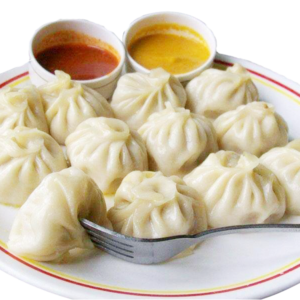

- Make the dough: In a large bowl, combine 2 cups of flour, 1 teaspoon of salt, and 1/2 cup of water. Mix until the dough comes together and knead for a few minutes until smooth. Cover with plastic wrap and let rest for 30 minutes.
- Prepare the filling: In a separate bowl, mix together 1 pound of ground meat (chicken, pork, or beef), 1 finely chopped onion, 1 cup of chopped cabbage, 1 tablespoon of soy sauce, 1 tablespoon of sesame oil, and 1 teaspoon of grated ginger.
- Wrap the dumplings: Roll out the dough into thin circles and place a spoonful of the filling in the center of each. Fold the dough over the filling to create a half-moon shape and press the edges together to seal.
- Cook the dumplings: Boil a pot of salted water and add the dumplings. Cook for about 5-7 minutes or until they float to the top. Serve with soy sauce for dipping. Enjoy!